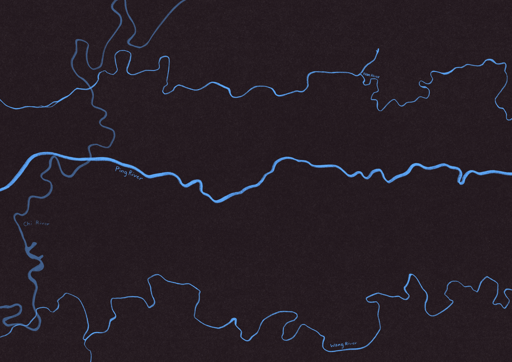
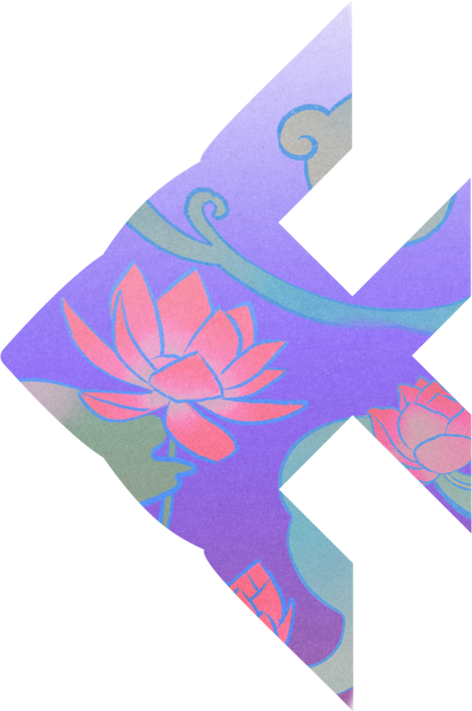
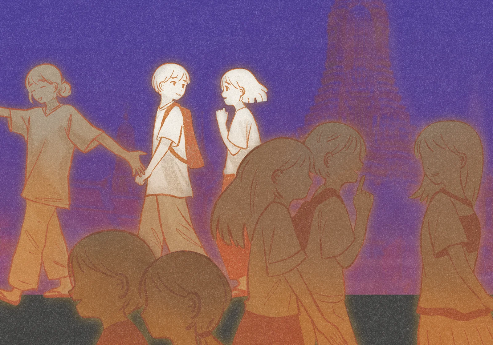
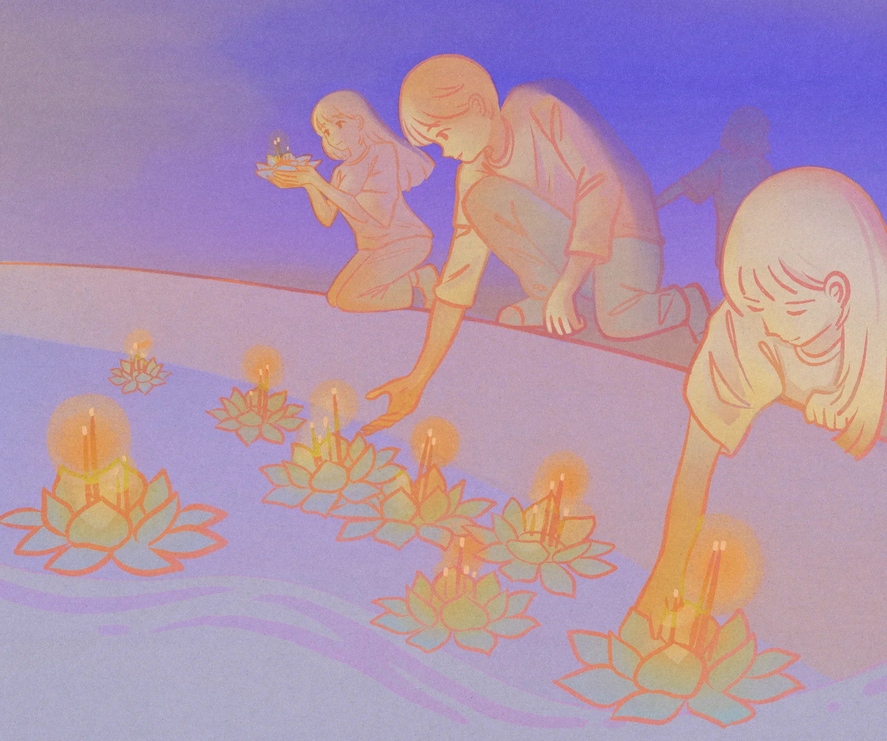
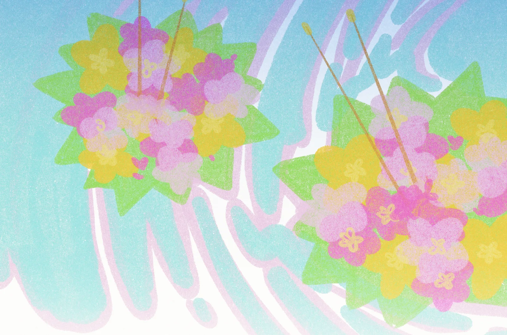
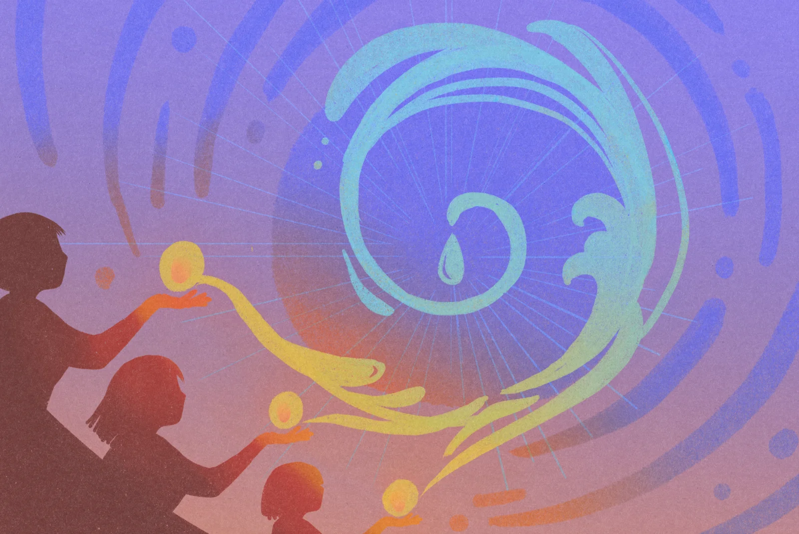
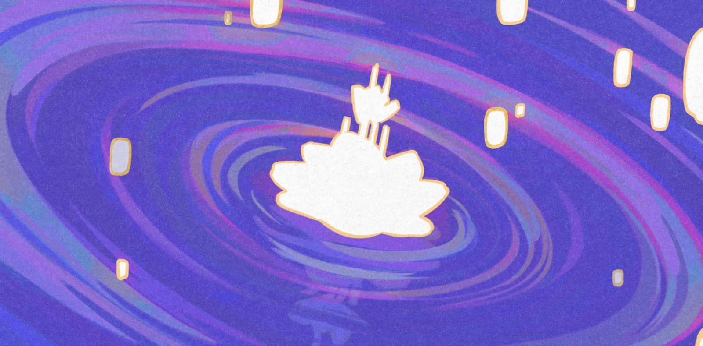
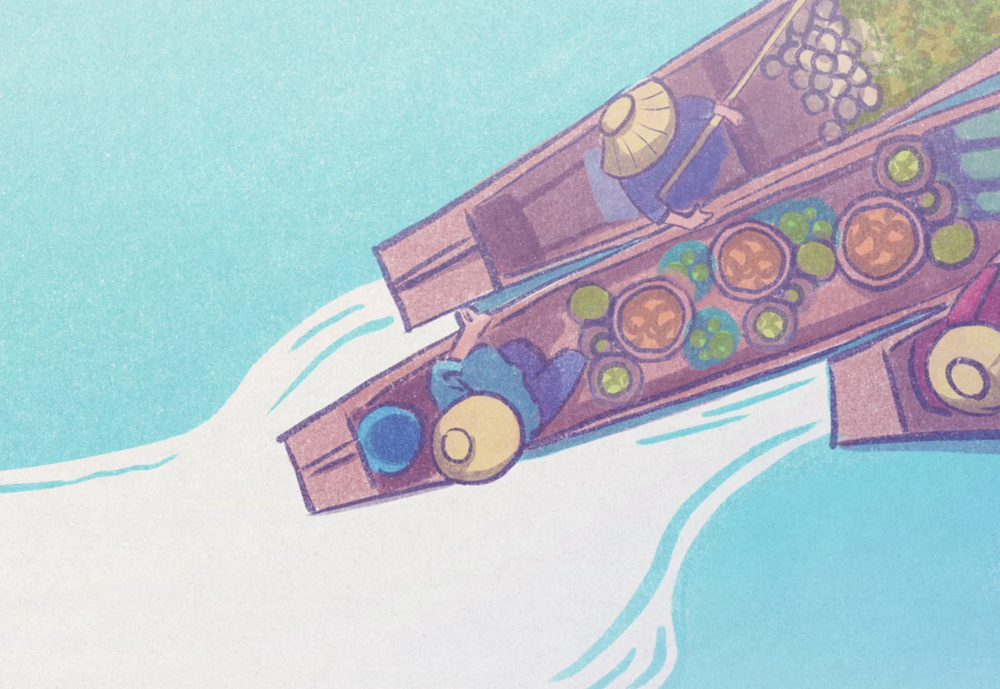
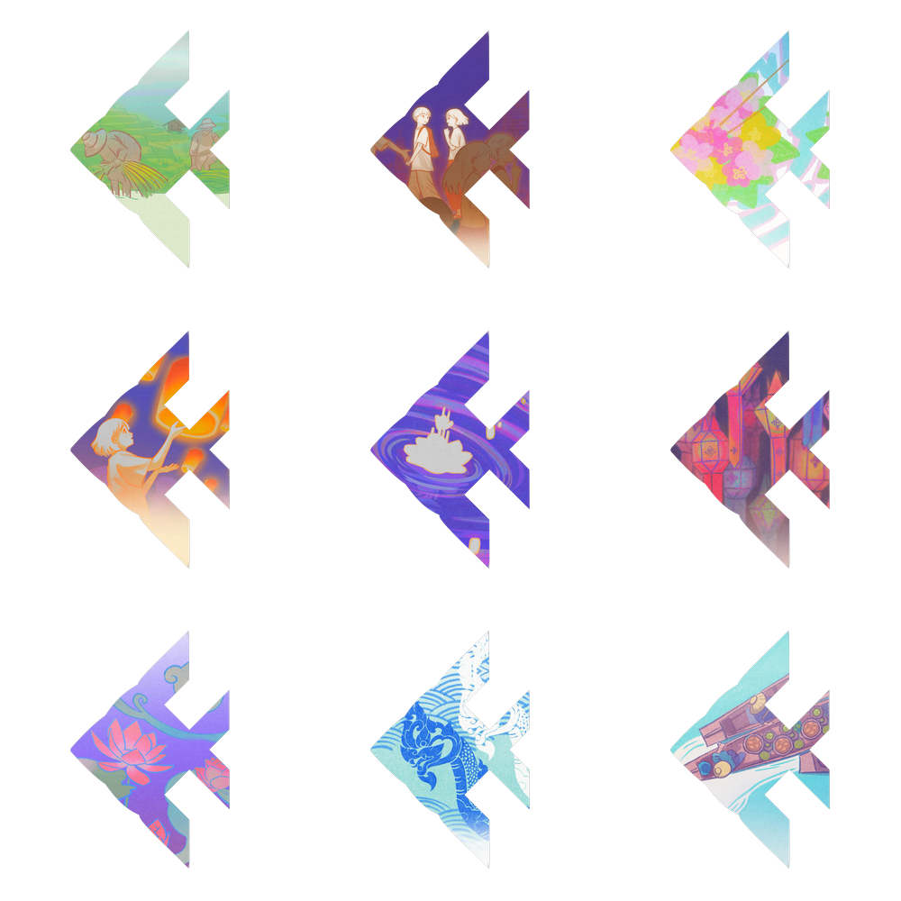
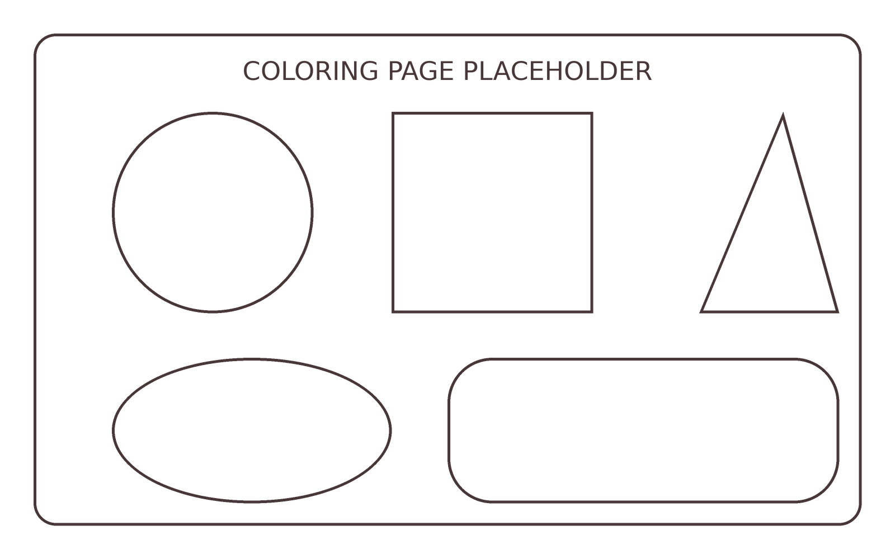

a new challenge
each month
more coming
next month
more coming
next month
Explore the story
of Loy Krathong
drag to move
around!
about
ลอยกระทง
Thailand's festival of floating lights. Once a year, people gather at rivers, canals and ponds, set a small floating offering on the water, make a wish and let it drift away.
เทศกาลแห่งแสงเทียนลอยน้ำของไทย ปีละครั้งผู้คนจะมารวมกันที่ริมแม่น้ำ คลอง และสระน้ำ วางกระทงเล็ก ๆ ลงบนผิวน้ำ อธิษฐาน แล้วปล่อยให้มันลอยไป


Make or buy a krathong.
ทำหรือซื้อกระทง
Go to the water with family or friends.
ไปที่ริมน้ำกับครอบครัวหรือเพื่อน
Light the candle and the incense.
จุดเทียนและธูป
Raise the krathong to your forehead, say thank you and make a wish.
ยกกระทงขึ้นระดับหน้าผาก กล่าวขอบคุณ และอธิษฐาน
Set it gently on the water and watch it drift away.
วางกระทงลงบนน้ำเบา ๆ แล้วมองดูมันลอยไป
Some people add a few strands of hair or nail clippings, to symbolise letting go of bad luck or anger. Some add a coin, and children often collect the coins the next day, which is a small act of charity. Many towns also hold music, parades and contests.
บางคนใส่ผมหรือเล็บเล็กน้อยเพื่อเป็นสัญลักษณ์ของการปล่อยวางโชคร้ายหรือความโกรธ บางคนใส่เหรียญ และเด็ก ๆ มักมาเก็บเหรียญในวันรุ่งขึ้น ซึ่งเป็นการทำทานเล็ก ๆ หลายเมืองยังมีดนตรี ขบวนแห่ และการประกวดด้วย

Traditionally it is a round slice of banana trunk, edged with folded banana leaves and topped with flowers, three sticks of incense and a candle. Today many are made of bread, coconut shell or other natural materials, because foam krathong stay in the water for a very long time.
กระทงแบบดั้งเดิมทำจากแผ่นหยวกกล้วยกลม ตกแต่งขอบด้วยใบตองพับ และประดับดอกไม้ ธูปสามดอก และเทียน ทุกวันนี้หลายคนใช้ขนมปัง กะลามะพร้าว หรือวัสดุธรรมชาติอื่น ๆ เพราะกระทงโฟมอยู่ในน้ำได้นานมาก


Many people thank Phra Mae Khongkha, the goddess of water, who is linked to the Ganges goddess Ganga, and ask forgiveness for the ways we misuse water.
หลายคนขอบคุณพระแม่คงคา เทพีแห่งสายน้ำ ซึ่งเชื่อมโยงกับเทพีคงคาแห่งแม่น้ำคงคา และขอขมาที่เราใช้น้ำไม่ถูกต้อง
Some stories say krathong float to honour the Buddha. One legend sends them toward a footprint he left on the Namada river in India.
บางเรื่องเล่าว่าลอยกระทงเพื่อบูชาพระพุทธเจ้า ตำนานหนึ่งเล่าว่ากระทงลอยไปยังรอยพระพุทธบาทที่ริมแม่น้ำนัมมทาในอินเดีย
The krathong carries away bad luck, worries and anger, so you can start fresh.
กระทงพาโชคร้าย ความกังวล และความโกรธลอยไป เพื่อให้เราเริ่มต้นใหม่
Some people float their offering to honour their ancestors.
บางคนลอยกระทงเพื่อระลึกถึงบรรพบุรุษ
There is no single reason. People take part in whichever way feels meaningful to them.
ไม่มีเหตุผลเดียว ทุกคนร่วมงานในแบบที่มีความหมายกับตนเอง
A famous story says it began in the Sukhothai Kingdom, about 1238 to 1438, when a royal consort named Nang Noppamat shaped a lotus flower from leaves and floated it for the king. The story appears in a text called Tamrap Thao Si Chulalak.
เรื่องเล่าที่รู้จักกันดีบอกว่าเริ่มต้นในสมัยกรุงสุโขทัย ราว พ.ศ. 1781 ถึง 1981 เมื่อนางนพมาศ พระสนมของพระมหากษัตริย์ ประดิษฐ์ดอกบัวจากใบไม้แล้วลอยถวายพระองค์ เรื่องนี้ปรากฏในตำราชื่อ ตำรับท้าวศรีจุฬาลักษณ์
Many historians believe that text was written much later, in the 1800s, so the tale may be a beautiful legend more than a record. The custom itself is probably older and shared across Southeast Asia. A carving at the Bayon temple in Cambodia from around 1200 shows something similar. In 1863 King Rama IV wrote that Thai Buddhists had adapted a Hindu festival to honour the Buddha. In the 1900s it grew into the national festival we know today.
นักประวัติศาสตร์หลายคนเชื่อว่าตำรานี้แต่งขึ้นภายหลังมาก ในช่วงพุทธศตวรรษที่ 24 เรื่องนี้จึงอาจเป็นตำนานที่งดงามมากกว่าหลักฐานทางประวัติศาสตร์ ประเพณีนี้น่าจะเก่าแก่กว่าและมีร่วมกันทั่วเอเชียตะวันออกเฉียงใต้ ภาพสลักที่ปราสาทบายนในกัมพูชาราว ค.ศ. 1200 แสดงภาพคล้ายกัน ในปี 1863 รัชกาลที่ 4 ทรงบันทึกว่าชาวพุทธไทยดัดแปลงพิธีของฮินดูเพื่อบูชาพระพุทธเจ้า และในศตวรรษที่ 20 ก็กลายเป็นเทศกาลของชาติอย่างที่เรารู้จักกัน

In the Lanna north, people also release sky lanterns called khom loi on the same full moon, and decorate homes and temples with lanterns.
ในภาคเหนือแบบล้านนา ผู้คนยังปล่อยโคมลอยในคืนพระจันทร์เต็มดวงเดียวกัน และประดับบ้านและวัดด้วยโคม
Hundreds of coconut shell krathong are tied into a long line and floated as a chain of light.
กระทงกะลามะพร้าวหลายร้อยใบถูกร้อยต่อกันเป็นสายยาวแล้วลอยเป็นสายแสง
Performances retell the story of Nang Noppamat and the first krathong.
มีการแสดงเล่าเรื่องนางนพมาศและกระทงใบแรก
Nearby countries have their own water and light festivals too, such as Bon Om Touk in Cambodia, Il Poya in Sri Lanka and Tazaungdaing in Myanmar.
ประเทศใกล้เคียงก็มีเทศกาลน้ำและแสงของตนเอง เช่น บอนอมตุกในกัมพูชา อิลโปยะในศรีลังกา และตาซองดายน์ในเมียนมา

After the festival in 2016, Bangkok collected 661,935 krathong. About 94 out of every 100 were made of natural materials, but around 44,000 were foam. Even natural krathong add waste when thousands are floated at once, and cleaning up is a big job every year.
หลังเทศกาลปี 2016 กรุงเทพมหานครเก็บกระทงได้ 661,935 ใบ ประมาณ 94 ใน 100 ใบทำจากวัสดุธรรมชาติ แต่มีราว 44,000 ใบที่เป็นโฟม แม้กระทงธรรมชาติก็เพิ่มขยะเมื่อลอยพร้อมกันนับพันใบ และการเก็บกวาดเป็นงานใหญ่ทุกปี
Choose natural materials such as banana leaf, bread or coconut shell.
Skip foam, plastic, pins and staples.
Float one krathong for a group, not one each.
Take your litter with you.
เลือกวัสดุธรรมชาติ เช่น ใบตอง ขนมปัง หรือกะลา ไม่ใช้โฟม พลาสติก เข็มหมุด และลวดเย็บกระดาษ ลอยหนึ่งกระทงต่อหนึ่งกลุ่ม และเก็บขยะกลับไปด้วย
Learn more: Thailand Foundation and Wikipedia. Dates are expected dates; check official announcements.
เกี่ยวกับเรา
our aim
Loy is a project that wants more people to think about Loy Krathong, and the water it celebrates, all year round and not only on one night in November.
Most of us rarely think about water in daily life. We turn on the tap, wash, flush and move on. Yet our rivers carry stories, festivals and the water we all share.
So we turned Thailand's rivers into stories to read, pages to colour, a river to defend and questions to test what you know. Small habits keep these rivers alive: a shorter shower, a tap that does not drip, and a krathong that does not kill fish.
Loy เป็นโปรเจกต์ที่อยากให้ผู้คนนึกถึงประเพณีลอยกระทงและน้ำที่เราเฉลิมฉลอง ตลอดทั้งปี ไม่ใช่แค่คืนเดียวในเดือนพฤศจิกายน
ในชีวิตประจำวัน เรามักไม่ค่อยนึกถึงน้ำ เปิดก๊อก ล้างมือ แล้วก็ผ่านไป ทั้งที่แม่น้ำของเราเต็มไปด้วยเรื่องราว เทศกาล และน้ำที่เราทุกคนใช้ร่วมกัน
เราจึงเปลี่ยนแม่น้ำของไทยให้เป็นเรื่องราวให้อ่าน ภาพให้ระบายสี แม่น้ำให้ปกป้อง และคำถามให้ลองทดสอบความรู้ นิสัยเล็ก ๆ ช่วยให้แม่น้ำเหล่านี้ยังมีชีวิตอยู่ ทั้งอาบน้ำให้สั้นลง ก๊อกน้ำที่ไม่หยด และกระทงที่ไม่ทำร้ายปลา

Fill your own ring of fish with photos of the rivers and festivals you love, and write a little reflection for each. They stay on this device unless you share them.เติมวงปลาของคุณด้วยภาพแม่น้ำและเทศกาลที่คุณรัก และเขียนความรู้สึกสั้น ๆ ให้แต่ละภาพ ภาพจะอยู่ในอุปกรณ์เครื่องนี้ เว้นแต่คุณจะแชร์
Tap the striped fish to add your first momentแตะปลาลายทางเพื่อเพิ่มช่วงเวลาแรกของคุณ
Drag to look around, tap a fish to read its storyลากเพื่อมองไปรอบ ๆ แตะปลาเพื่ออ่านเรื่องราว
Every river has stories to tell, and you helped keep this one clean.
Let’s color! About Loy Krathongเกี่ยวกับลอยกระทง Back to Play